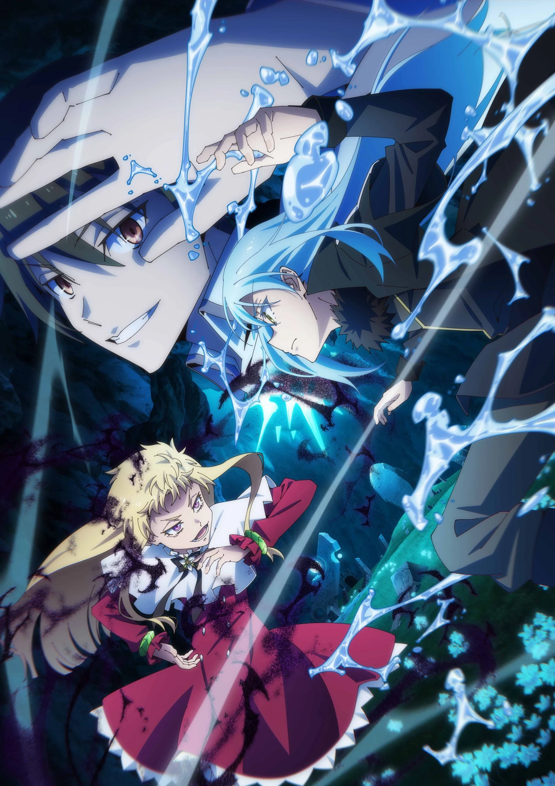
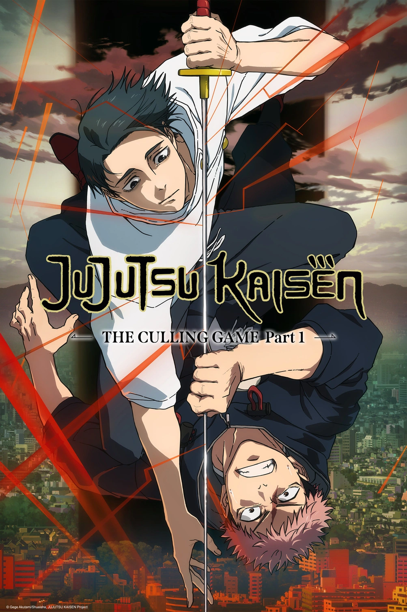
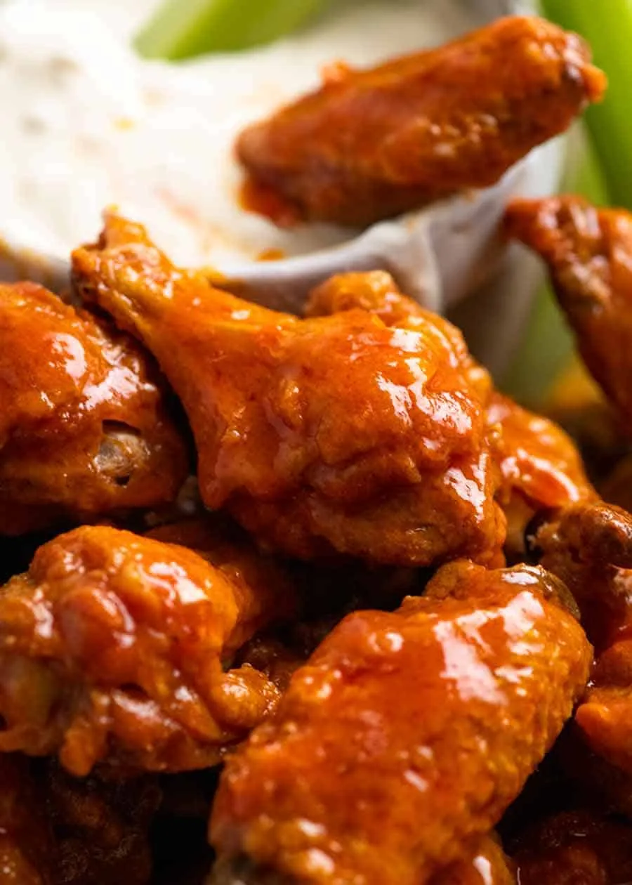
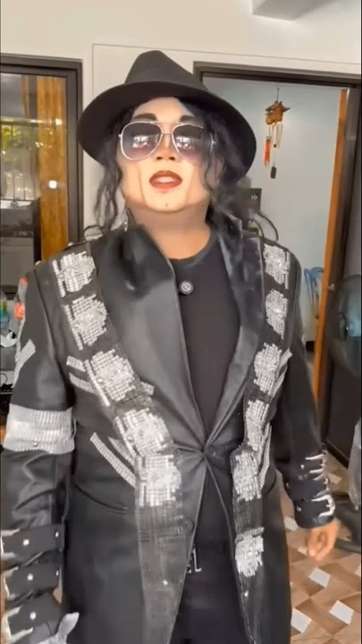

Financial Freedom 💸
Earn enough money to live comfortably, help my family, and buy things without checking my bank balance five times.
HELLO, WORLD!
An IT graduate who enjoys anime, K-dramas, music, good food, and finding something fun to do.
Welcome to my little corner of the internet!
Get to Know MeA LITTLE INTRODUCTION
Hi! I'm Jayenn Harold L. Esguerra, a graduate of Bachelor of Science in Information Technology specializing in Web and Mobile Application Development from FEU Alabang.
Outside the world of technology, I enjoy watching anime and Korean dramas, listening to music, trying spicy food, and eating pizza.
I'm someone who enjoys discovering new things, laughing at random moments, and making the most out of life, even when I have absolutely no idea what I'm doing.
THE PLAN... SORT OF
Some serious goals, some personal dreams, and a little bit of reality.
Earn enough money to live comfortably, help my family, and buy things without checking my bank balance five times.
Finally finish all my anime and K-drama watchlists. A dream that may never come true.
Build a successful career without sacrificing sleep, hobbies, weekends, and my sanity.
Live a peaceful life with less stress, fewer problems, and absolutely no unnecessary drama. Unless it's a K-drama.
Explore new places, experience different cultures, and take pictures like I'm the main character of a travel vlog.
Make time for the things I love, spend meaningful moments with people, and remember that life isn't just about being productive.
THINGS I ENJOY
Here are some of the things that make my day better.

Pain, suffering, time loops, and emotional damage.

Starting as a slime and somehow becoming a whole nation.

Great fights, amazing characters, and emotional damage again.
Medical drama with intense moments and interesting characters.
Smart strategies, intense fights, and friendships put to the test.
My playlist depends on my mood. Sometimes I'm the main character; sometimes I'm just staring at the ceiling.

The spicier, the better. Tears are part of the experience.
A classic favorite. Pizza can fix almost any bad day.
Running for fun, fitness, and the post-run food.
Aim carefully and hope the arrow goes where I want.
A fun way to stay active and test my reflexes.
THINGS THAT CONFUSE ME

Akala mo si Muzan na... MALUPITON PALA! HAHAHA 💀
Scroll ka pa... may mas malala. 👀 ↓
THE REAL DEMON KING
Ayan, para walang duda. Ito ang totoong Muzan Kibutsuji! HAHAHA 💀
RANDOM INFORMATION
Sometimes, I get bored and look for something to do. Then, when I finally find something to do, I suddenly miss being bored.
I open an app, forget why I opened it, close it, and open it again like something magical will happen the second time.
Basically, I'm bored of being bored, but too bored to fix it. 😭
WORDS TO LIVE BY
You know, life is life! Kung hindi para sa'yo, edi wow! Pero kung para sa'yo, edi thank you! Ganern!
A little humor, a little wisdom, and a lot of acceptance. ✨